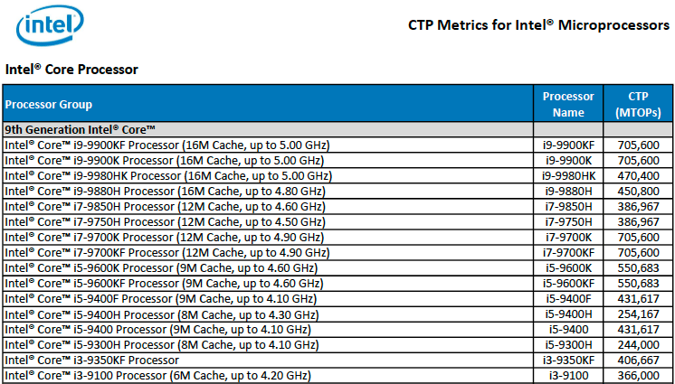
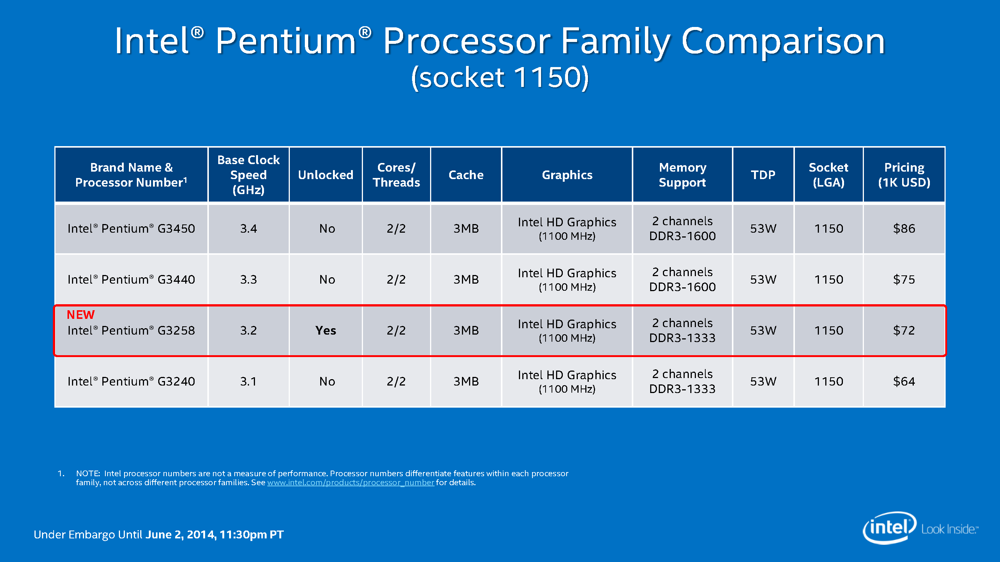

| 4004 | Pentium | Pentium4 | Pentium Extreme Editon | Core i3 |
|---|---|---|---|---|
| 8080 | Pentium w/MMX | Mobile Pentium 4-M | Core Duo | Core i5 |
| 8086 | Pentium Pro | Pentium D | Core 2 Duo | Core i7 |
| 8087 | Pentium II | - | - | Core i9 |
| 8088 | Celeron | - | - | - |
| 80286 (286) | Pentium III | - | - | - |
| 80386 (386) | Pentium M | - | - | - |
| 80486 (486) | Celeron M | - | - | - |
Developed by Ted Hoff, Masatoshi Shima, and others at Intel and released on November 15, 1971, the 4004 was the first processor with a 4-bit register and 740 kHz clock speed. Smaller than a human thumbnail, the 4004 had 2,300 transistors with 10-micron spacing, capable 60,000 OPS (operations per second). It cost $200.00, while possessing as much computing power as the ENIAC computer.
Intel's first 32-bit x86 processor was the 80386, released in 1985. One key advantage that this processor had was its 32-bit address bus that allowed it to support up to 4GB of system memory. Although this was far more than anyone was using at the time, RAM limitations often hurt the performance of prior x86 and competing processors. Unlike modern CPUs, at the time the 80386 was released, more RAM almost always translated into a performance increase. Intel also implemented several architectural enhancements that helped push performance up above the 80286, even when both systems used the same amount of RAM. It also supported virtual mode processing, which increased multi-tasking support.
Intel's 80486 was another significant step up in terms of performance. The key to its success was tighter integration of components into the CPU. The 80486 was the first x86 CPU to contain L1 cache. Early 80486 models came with 8KB on-die, and were etched on a 1000nm process. But as the design transitioned to 600nm, the L1 cache size doubled to 16KB.
Intel also incorporated the FPU into the CPU, which up to that point had been a separate functional processing unit. By moving these pieces of hardware into the host processor, latency between them dropped sharply. The 80486 also used a faster FSB interface to increase bandwidth, and the core had various other tweaks to push up IPC. These changes increased the 80486's performance significantly, and high-end models were multiple times faster than the older 80386.
The Pentium emerged in 1993 as the first Intel x86 processor that didn't follow the 80x86 number system. Internally, the Pentium used the P5 architecture, which was Intel's first x86 superscalar design. Although the Pentium was generally faster than the 80486 in every way, its most prominent feature was a substantially improved FPU. The original Pentium's FPU was more than ten times faster than the 80486's aging unit. This became an even more significant feature in later years when Intel released the Pentium MMX. This processor was architecturally the same as the original Pentium, but featured support for Intel's new MMX SIMD instruction set that could drastically boost performance.
P6
Intel planned to quickly follow the Pentium up with the Pentium Pro based on its P6 architecture, but ran into technical difficulties. The Pentium Pro was considerably faster than the Pentium in 32-bit operations thanks to its Out-of-Order (OoO) design. It featured a significantly redesigned internal architecture that decoded instructions into micro-ops, which were then executed on general-purpose execution units. It also used a significantly extended 14-stage pipeline owing to the additional decoding hardware.
As the first Pentium Pro processors were targeted at the server market, Intel extended the address bus again to 36-bit and added its PAE technology that allowed it to support up to 64GB of RAM. This was far more than average users needed, but being able to support greater amounts of RAM was key to Intel's server customers.
In 2000, Intel's Netburst architecture was finally ready, and it was pushed into production as the Pentium 4. The combination would carry Intel's top-end CPUs for the next six years. The first implementation was named "Willamette," which carried Netburst and the Pentium 4 through the first two years of its life. This was a troubled time for Intel, however, and the chip struggled to outperform the Pentium III. Netburst enabled significantly higher frequencies, and Willamette managed to hit 2 GHz, but the Pentium III at 1.4 GHz was still faster in some tasks. AMD's Athlon processors enjoyed a healthy performance lead during this period.
Intel eventually gave up on its Netburst architecture and instead put its support behind the P6 and Pentium-M design. The company realized that P6 was still viable, and capable of being both efficient and providing excellent performance. It reworked the architecture into its Core design. Like the Pentium-M, it used a 12 to 14 stage pipeline that was significantly shorter than Prescott's 31-stage implementation.
Core proved to be highly scalable, and Intel was able to push it into service on mobile systems with TDPs as low as 5W and high-end servers with 130W ceilings. Intel mostly sold it as "Core 2 Duo" or "Core 2 Quad" products, but Core was also used inside of Core Solo-, Celeron-, Pentium- and Xeon-branded CPUs. The dies used were built using two CPU cores, and quad-core designs used two dual-core dies on an MCM. Single-core versions, meanwhile, had one core disabled. L2 cache size ranged from 512KB up to 12MB.
With Sandy Bridge, Intel made its most significant leap in performance, the most in seven years. The execution pipeline was shortened into 14-19 stages. Sandy Bridge implemented a micro-op cache capable of holding up to 1500 decoded micro-ops that enabled instructions to bypass five stages if the micro-op required was already cached. If not, the instruction would have to run the full 19 stages.
Intel followed Sandy Bridge with its Ivy Bridge processors, a "Tick+" in the company's "Tick-Tock" product design cadence. Ivy Bridge's IPC was only slightly better than Sandy Bridge's, but it brought with it other key advantages that outshined its predecessor.
Ivy Bridge's greatest advantage was its energy efficiency. The architecture was crafted with 22nm three-dimensional FinFET transistors that sharply reduced the CPU's power consumption. Whereas mainstream Sandy Bridge-based Core i7 processors typically came with a 95W TDP, the equivalent Ivy Bridge-based chips were rated at 77W. This was particularly important in mobile systems, and it allowed Intel to release a quad-core mobile Ivy Bridge CPU with a low 35W TDP. Prior to this, all of Intel's quad-core mobile CPUs came with at least a 45W TDP.
Like a metronome, Intel pushed out its Haswell architecture just one year after Ivy Bridge. Haswell was once again more of an evolutionary step than a revolutionary one. The AMD processors competing against Sandy and Ivy Bridge weren't fast enough to do battle at the high end, so Intel wasn't pressured to increase performance too much. Haswell was approximately just 10 percent faster than Ivy Bridge overall.
Intel's next processor architecture was known as Broadwell. Designed for mobile systems, it was released in late 2014 and used 14nm transistors. The first Broadwell-based product was called the Core M, and it was a dual-core Hyper-Threaded processor that operated with a 3-6W TDP.
Other mobile Broadwell processors dribbled out over time, but on the desktop side of the market, Broadwell never really showed up. A few desktop-oriented models were released in mid-2015. However, their reception was tepid. The highest-end SKU, however, contains the fastest integrated GPU Intel has ever added to a socketed CPU. It contains six subslices with eight EUs each, adding up to a total of 48. The GPU also has access to a 128MB L4 eDRAM cache, which helps to resolve the bandwidth challenges on-die graphics engines typically face. In gaming tests, it outperformed AMD's fastest APU and proved to be more than capable of providing playable frame rates in modern games.
In 2015, not long after Broadwell first showed up on desktop systems, Intel replaced Broadwell with its Skylake architecture. Although Skylake-based CPUs were Intel's fastest to date, the platform changes accompanying Skylake were arguably more important.
Skylake was the first consumer-oriented CPU to use DDR4 memory, which is more energy-efficient than DDR3 and capable of enabling greater throughput. The Skylake platform also contained a number of improvements, such as a new DMI interface, an upgraded PCIe controller, and support for a much wider array of connectivity devices.
Starting with Skylake and Kaby Lake, Intel ended its tick-tock development cadence in favor of a tick-tock-tock schedule. It was also referred to as the process-architecture-optimize cadence. This extended the amount of time Intel spent on a single fabrication process before it developed a new one. It also extended the amount of time between major architectural changes.
With Coffee Lake, Intel increased the number of cores in its Core i3, i5, and i7 processors by two. This marked the largest increase in core count for Intel since the introduction of the Core 2 Quad in 2006.
Core i5s now have six cores without Hyper-Threading. Coffee Lake-based Core i7s also have six cores, but with Hyper-Threading. The underlying architecture does not change from Kaby Lake. However, with more cores to share the work, performance increases markedly in threaded applications.
Coffee Lake-based Core i3 processors lack Hyper-Threading, but thanks to the increase from two to four CPU cores, the Core i3 processor family has never wielded more power. In essence, Coffee Lake Core i3 CPUs are every bit as powerful as Kaby Lake Core i5s, and potentially faster than Skylake Core i5s.
Intel's delayed 10nm process has slowed progress on the smaller Cannon Lake processors, so the company developed the 14nm++ Whiskey Lake and 14nm+ Amber Lake processors for laptops, to fill the gap between generations.
The new 15-watt U-Series Whiskey Lake models slot into the same Eighth Generation Core “Kaby Lake-R” product stack as previous-generation mobile chips, and have the same numbers of cores and threads as the chips they’ll be replacing. And the 5-watt Amber Lake models replace the seventh-gen Y-series chips found primarily in fanless laptops and convertibles. One of the primary new features for Whiskey Lake is the addition of the first hardware-based fixes for Meltdown and L1TF to appear on consumer-focused CPUs.
The Whiskey Lake and Amber Lake processors all feature the same underlying Kaby Lake microarchitecture as previous-generation CPUs, with a few optimizations. Primarily, single-core boost frequencies get a big bump over previous parts (up to 4.6GHz with the Core i7-8565U). But of course, exactly how long your CPU will stay at that top speed depends largely on the device’s cooling abilities.
 